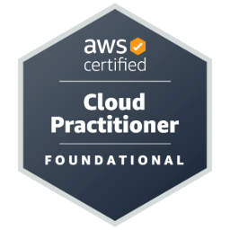
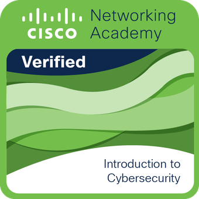

Cloud Platforms
AWS, Azure, GCP
VPC · IAM · Security HubNéstor D. Fleitas
Senior DevOps Engineer · Security-Focused
DevOps-first. Security as a strategic advantage.
I specialize in DevOps for banking and fintech environments, with a strong security focus that hardens cloud platforms, CI/CD, and containerized workloads without slowing delivery.
Cloud & Infrastructure
HSBC · Banco Pichincha · Credicoop
Equifax · Allianz
OWASP · NIST · SAST/DAST
I am a Senior DevOps Engineer transitioning into a specialized DevSecOps role. My core strength is designing and automating cloud infrastructure with measurable reliability improvements while adding security controls that protect critical banking workloads.
Recent focus areas include hardened Kubernetes (EKS/AKS), secure IaC with Terraform and AWS CDK, and CI/CD pipelines with policy enforcement, SAST/DAST, and compliance-ready audit trails.
AWS, Azure, GCP
VPC · IAM · Security HubTerraform, AWS CDK
Immutable builds · Policy as codeJenkins, GitHub Actions, Azure DevOps
Pipeline hardening · secrets managementOWASP, NIST, SAST/DAST
SonarQube · Wazuh · IAMBanco Pichincha
Dec 2024 – Present
Allianz Argentina
Jul 2024 – May 2025
ARKHO · Chile
Feb 2024 – Jul 2024
AGEA SA
Oct 2022 – Mar 2024
Ingenia
Apr 2022 – Sep 2022
Flux IT · La Nación
Jul 2021 – Feb 2022
Equifax
Feb 2020 – Jun 2021
Official digital badges help recruiters verify expertise quickly.

Foundational cloud certification

Introduction to Cybersecurity

Security Operations certification
I’m looking for DevOps roles where security is a differentiator. If you need a teammate who can automate delivery while strengthening controls, I’m ready to help.